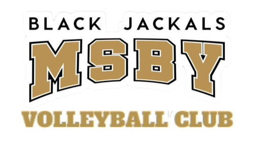

1. REGLAS BASICAS
- El voleibol se juega entre dos equipos, con seis jugadores en cada lado de la red.
- El objetivo es hacer que la pelota toque el suelo en el lado del oponente o que el oponente cometa un error.
- Cada equipo tiene tres toques para pasar la pelota al lado del oponente.
- La rotación es importante: los jugadores cambian de posición en el sentido de las agujas del reloj después de ganar el saque.
2. Posiciones en la Cancha:
- Colocador: El jugador que establece la pelota para los atacantes.
- Líbero: Un jugador defensivo especializado, que no puede atacar o bloquear, pero es excelente en la defensa y el pase.
- Atacantes: Jugadores que saltan y golpean la pelota en el lado del oponente para anotar puntos.
- Bloqueadores: Jugadores que intentan bloquear los ataques del oponente en la red.
3. Habilidades Básicas:
- Saque: Comienza el juego al golpear la pelota desde detrás de la línea de saque hacia el lado del oponente.

- Pase: Golpea la pelota con las manos para dirigirla hacia el colocador de tu equipo.

- Remate: Saltar y golpear la pelota para enviarla al lado del oponente con fuerza.

- Bloqueo: Salta con los brazos extendidos cerca de la red para detener los remates del oponente.

4. Ejercicio Práctico: Pase y Saque:
Comienza con un compañero. Practica el pase pasándote la pelota suavemente. Mantén los brazos estirados y usa tus manos para controlar la dirección.
Luego, trabaja en tu saque. Sujeta la pelota con una mano y golpéala con la otra, intentando que pase por encima de la red y caiga en el área de servicio del oponente.
5. Comunicación y Trabajo en Equipo:
La comunicación es clave. Usa señales visuales o palabras clave para coordinar tus acciones con tus compañeros de equipo.
Practica trabajar juntos en situaciones de tres toques para pasar la pelota de manera efectiva.

6. Participa en Juegos Amistosos:
Organiza partidos informales con amigos o compañeros de clase para aplicar lo que has aprendido.
No te preocupes demasiado por ganar al principio, ¡la práctica es más importante!

Recuerda que el voleibol es un deporte que requiere tiempo y paciencia para desarrollar habilidades sólidas. Mantén una actitud positiva y sigue practicando para mejorar. ¡Diviértete jugando y aprendiendo!